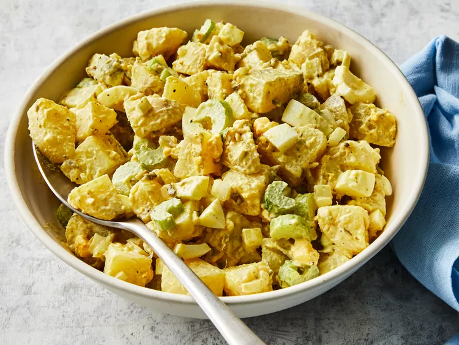

Old Fashioned Potato Salad

Description
A delicious potato salad made to be enjoyed on hot
summer days by the lake or an early morning breakfast.
Ingredients
- 5 medium potatoes
- 3 large eggs
- 1 cup chopped celery
- ½ cup chopped onion
- ½ cup sweet pickle relish
- ¼ cup mayonnaise
- 1 tablespoon prepared mustard
- ¼ teaspoon garlic salt
- ¼ teaspoon celery salt
- Ground black pepper to taste